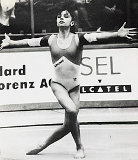

Gabriela Agachi (ROM)
1991 Kosice International AA Gold Medalist

Gabriela was born on December 13, 1976 in Constanta.
Competition Results
1989 1990 This page was created on September
08, 2006 and was last updated on September 18, 2026.
Romanian Championships: 4th AA (Category I)
GBR-ROM Dual Meet: 1st Team, 4th AA
1991
BEL-FRA-ROM-USSR Meet: 1st Team, 4th AA
GER-ROM Dual Meet: 1st Team
International Jr. Championships: 16th AA
Kosice International: 1st AA, 1st FX
USA-ROM Dual Meet: 5th AA
1992
Balkan Championships: 1st Team 6th AA
HUN-ROM Dual Meet: 1st Team, 5th AA
Romanian Championships: 3rd B
World Stars: 8th AA, 6th B, 7th FX
© Gymn Forum